Beyond recording a sale.
Explore an experiment using the owner's menu economics, not another billing workflow.
A small business. A bigger tomorrow.
Your business. New possibilities. Every day.
Meet Udaan. An AI companion that helps small Indian business owners find a relevant idea, try it carefully, and learn from what happens.
Working prototype · RFS 76 · Built for Product (Un)Conference 2026
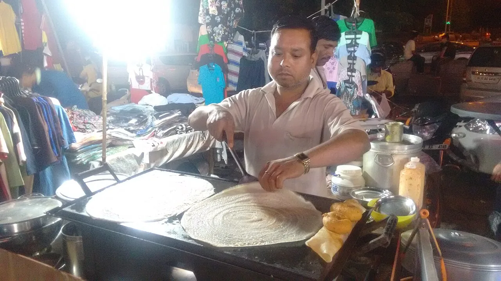
What if the next idea
fits your business?
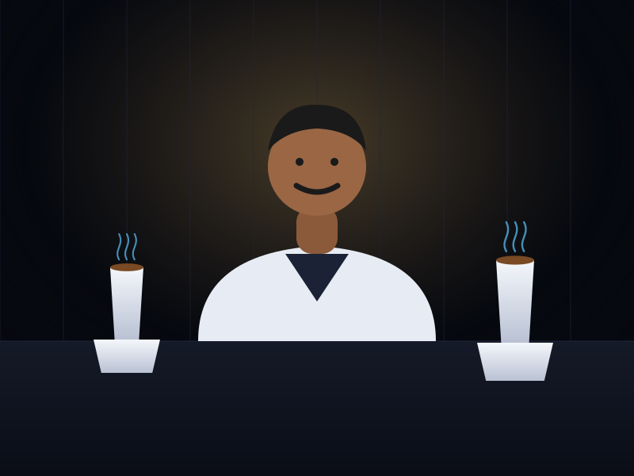
Whitefield, Bengaluru
Ravi runs Udaan Breakfast House, a small South Indian breakfast café. Before the first idli reaches a table, he is managing preparation, staff and costs. Then come customers, suppliers and the next day's planning.
He wants to explore new ideas and technology. But who has time to research what other businesses are trying when there is a kitchen to run?
An illustrative day, not an observed customer interview. The problem is limited access to time, inspiration and business intelligence — not a lack of ambition.
The founder's product intent
Large enterprises can turn to analytics teams, consultants and technology platforms. A neighbourhood owner often has to be the strategist, operator and accountant all at once.
Udaan's intent is to democratize business inspiration: translate relevant observations into small, practical experiments that an owner can understand and choose. No promise of guaranteed growth. A better starting point.
Explore an experiment using the owner's menu economics, not another billing workflow.
Explain a relevant possibility and the assumptions to check, not leave the owner interpreting charts alone.
Saved profile, experiments and learning inform structured recommendations, rather than starting over each time.
Attributed restaurant facts can prompt an idea. They do not establish demand, popularity or commercial success.
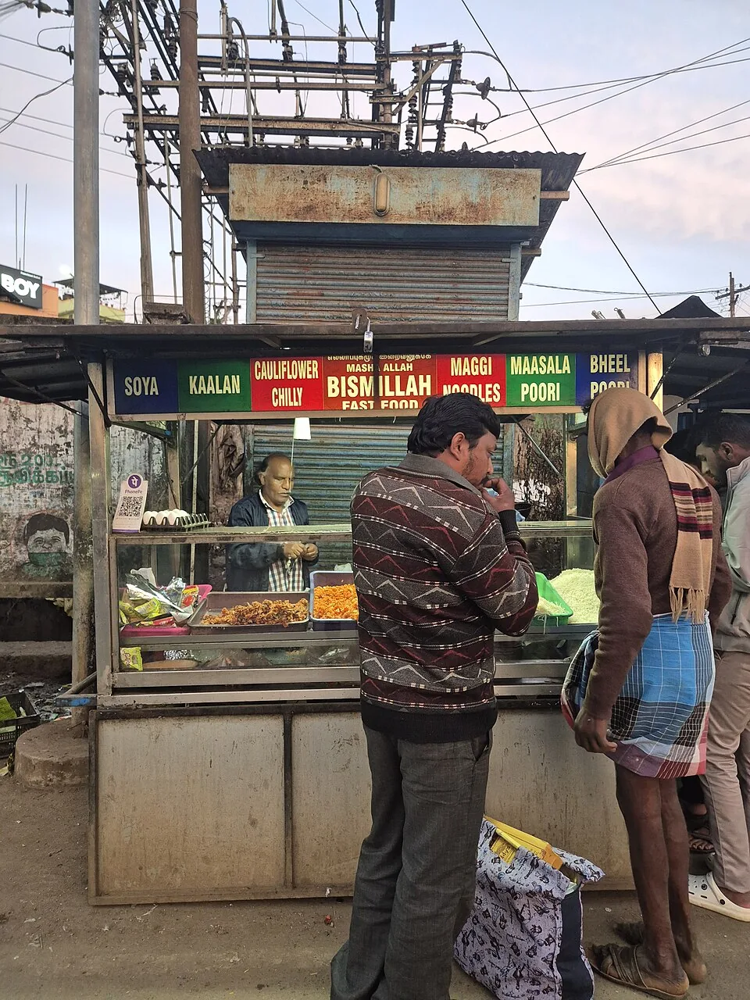
The everyday is full of possibility.
Small experiments.
Real decisions.
A human in control.
One relevant possibility becomes a bounded experiment. What Ravi records changes the next recommendation.
A context-ranked idea fits Ravi's existing menu: a ₹99 weekday breakfast combo. Discovery is curated, not autonomous market prediction.
Select a step to follow Ravi's journey. AI supports the decision; Ravi controls the experiment.
Illustrative owner questions and recommendations, based on the prototype's curated opportunity content. They are not quotes from customers or fresh model responses.
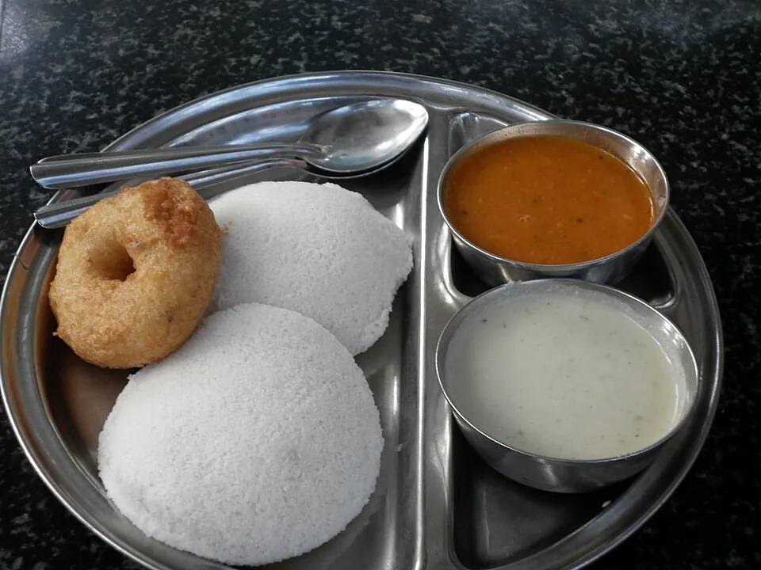
“How can I make weekdays worth stopping for?”
Recommendation: Test an existing-menu combo for seven days. Validate ₹45 variable cost before committing.
Owner action: Ask regulars, evaluate the numbers, approve, then record the outcome.
Explore the economics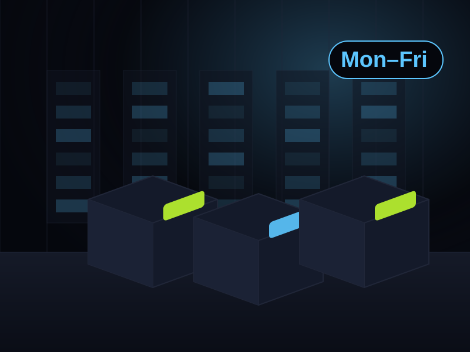
“Could the office next door become a regular?”
Recommendation: Start with one office and five opt-in preorders; confirm packaging and pickup.
Owner action: Manually test repeat demand. No delivery or subscription fulfillment service is integrated.
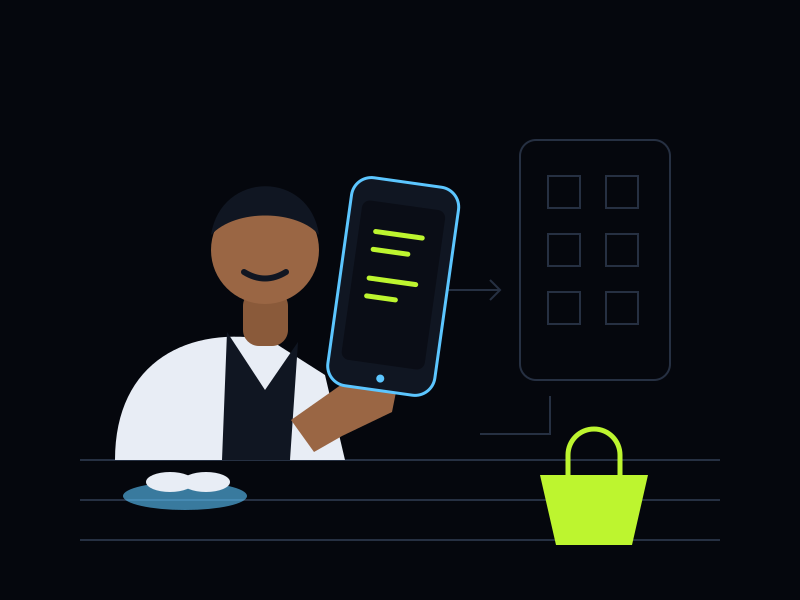
“Can I know demand before I prepare the food?”
Recommendation: Draft an opt-in WhatsApp message with menu, cutoff and pickup time. Begin with no promotion spend.
Owner action: Collect permission and track replies manually. Udaan sends no messages or orders.
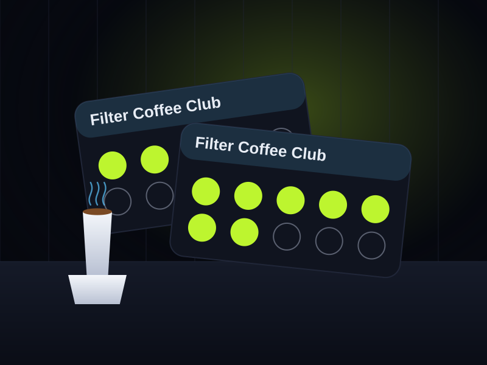
“How do I bring my coffee regulars back?”
Recommendation: Explore a simple five-visit stamp card; include rewards in the cost assumptions.
Owner action: Ask willing regulars and measure repeat visits. No automated loyalty platform or proven uplift.
IndiaRestros supplies restaurant and menu observations. Udaan helps connect relevant facts to an affordable idea — without pretending a menu tells us how a business performs.
Read-only server requests query Whitefield, Bengaluru and relevant vegetarian menu excerpts. Restaurant links, underlying source and supplied update dates accompany facts.
A five-minute server cache distinguishes fresh from cached responses and retains the original retrieval time. Periodic menu updates are not real-time prices.
Reasoning or Demo Mode suggests a small test. It cannot infer traffic, popularity, outcomes or guaranteed demand from a restaurant listing.
Ravi's shop and seeded sales are fictional. Real provider facts do not make the owner's demonstration results real-world evidence.
No live provider request is made by this static showcase. Unavailable or invalid upstream data produces an explicit unavailable state, not invented competitors.
Language should make an idea easier to use, not become another task. English, Hinglish, Hindi and Kannada share the same business logic and retain saved context when the preference changes.
“Weekday customers are down. Let's try a ₹99 breakfast combo.”
Illustrative localized copy; the adjacent image is an actual prototype capture. Native-speaker review and full live-model language coverage remain unverified.
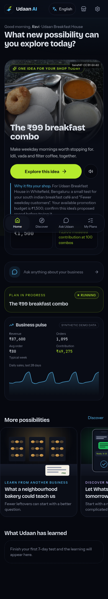
Keep the assumptions visible. The AI explains the idea; deterministic arithmetic calculates its modeled economics.
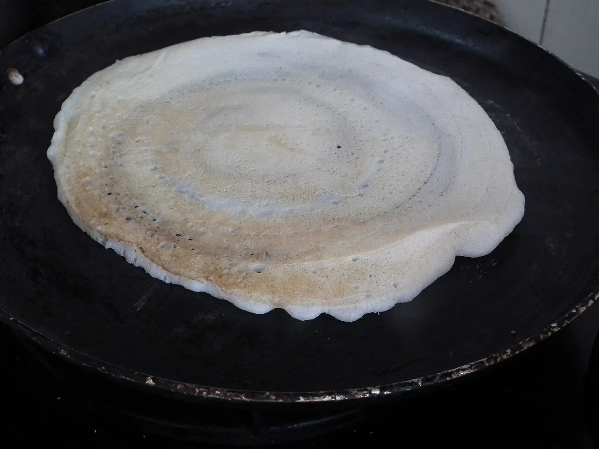
Rameshng · CC BY-SA 3.0 · not the modeled combo
Modeled contribution after promotion
₹3,900
(₹99 − ₹45) × 100 − ₹1,500
100% of the 100-unit target · promotion break-even: 28 units total
The model leaves ₹3,900 after variable costs and promotion. A repeat-customer or controlled-expansion test is a next hypothesis, not proof of lasting growth.
A static educational walkthrough of the repository's integer-paise formula. It does not call the application, save an outcome or run AI.
Positive modeled contribution, but short of target. Explore a ₹600 visibility test without claiming low awareness caused the shortfall.
₹9,900 revenue − ₹4,500 variable costs − ₹1,500 promotion. Each unit contributes ₹54 before promotion.
Explore repeat-customer testing or controlled expansion; the implemented follow-up budget is ₹900. Validate capacity before scaling.
The actual React/Vite + Express/TypeScript architecture. SQLite persistence, validated provider output and deterministic financials — not an invented cloud platform.
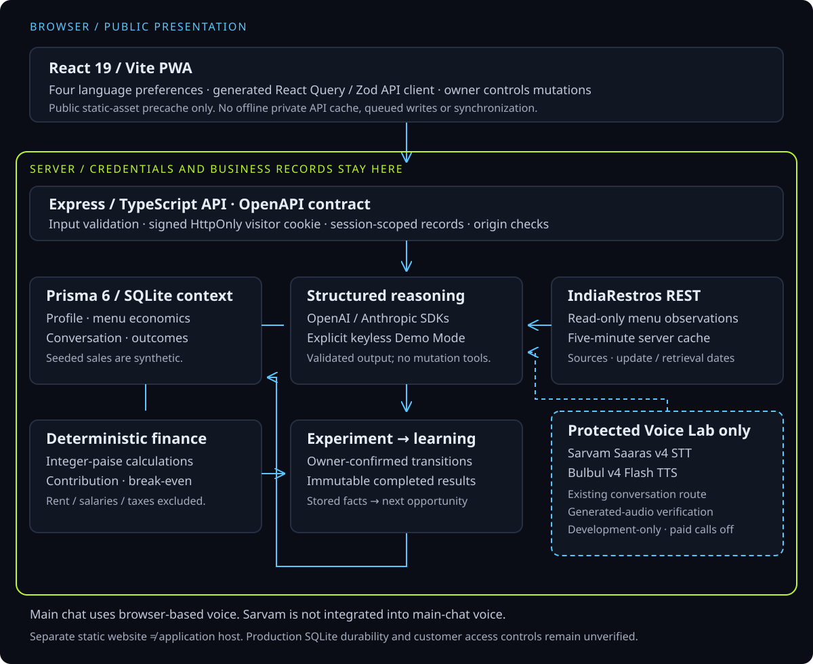
Mobile-first presentation; generated React Query clients and Zod schemas from OpenAPI. TypeScript/Express validates requests at the server boundary.
Saved profile, menu economics, conversations, experiment state and language-neutral learning facts. This is persisted context, not model fine-tuning.
Official SDKs share a structured-output contract. Live failures are explicit; the owner chooses Demo Mode. No silent substitution and no automatic paid retries.
Integer paise, server-validated transitions and immutable completed results. AI has no mutation tools; the owner confirms record changes.
The static showcase has no API, credentials or database. It does not host the PWA. Production storage durability and customer access controls remain deployment gates. Read source architecture ↗
Saved context and attributed menu facts inform recommendations. Observations, cached provenance and AI hypotheses stay distinct.
Financial services calculate. AI explains supplied numbers. Modeled contribution is never represented as net profit.
Signed HttpOnly cookies isolate fictional visitor records. Server-only keys never enter browser code. This is not production account authentication.
Language-neutral learning facts and shared business logic preserve state across language changes. Native-speaker quality still needs review.
Invalid live inference reports an error; Demo Mode is an explicit choice. Missing market facts are not replaced by fictional competitors.
The PWA precaches public assets only. No private API cache, queued writes or automatic synchronization. Physical Android/iPhone installation is unverified.
Recorded application results from the frozen 22 Nov 2026 release candidate, not tests rerun by this website and not real-world business validation. Lint and workspace typecheck also passed. Read the test report ↗
Relevant ideas arriving with a reason, not another noisy feed. Autonomous proactive discovery remains a roadmap concept.
Consented commerce and procurement integrations could connect exploration to operations. No purchasing or fulfillment is implemented today.
Human-reviewed speech and code-switching could bring the companion into the owner's day beyond the internal Voice Lab.
Long-term business learning could build on today's stored experiment facts. It is not autonomous continuous model training.
Bakeries, retailers and salons need their own economics and playbooks. A reusable loop is a starting point, not proof of category fit.
Genuine captures already in the repository. Every business record shown is synthetic. These images are evidence of the prototype UI, not of a publicly deployed release.
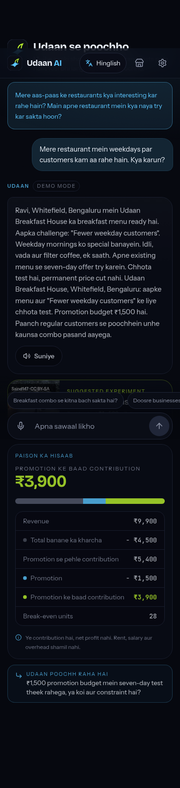
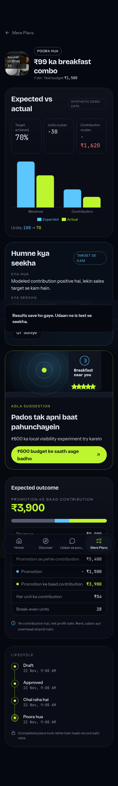
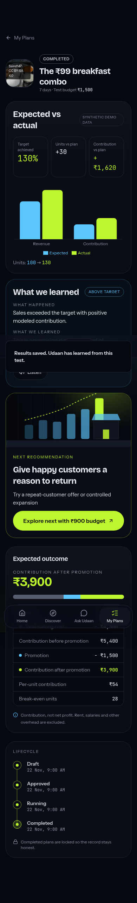
For every owner who has the ambition.
And deserves a little more room to explore.
Owner-supplied live URL verified against the actual Udaan onboarding screen on 22 Nov 2026. This is not an end-to-end production audit. The repository is private; source links require access. This showcase's Pages publication still requires approval.